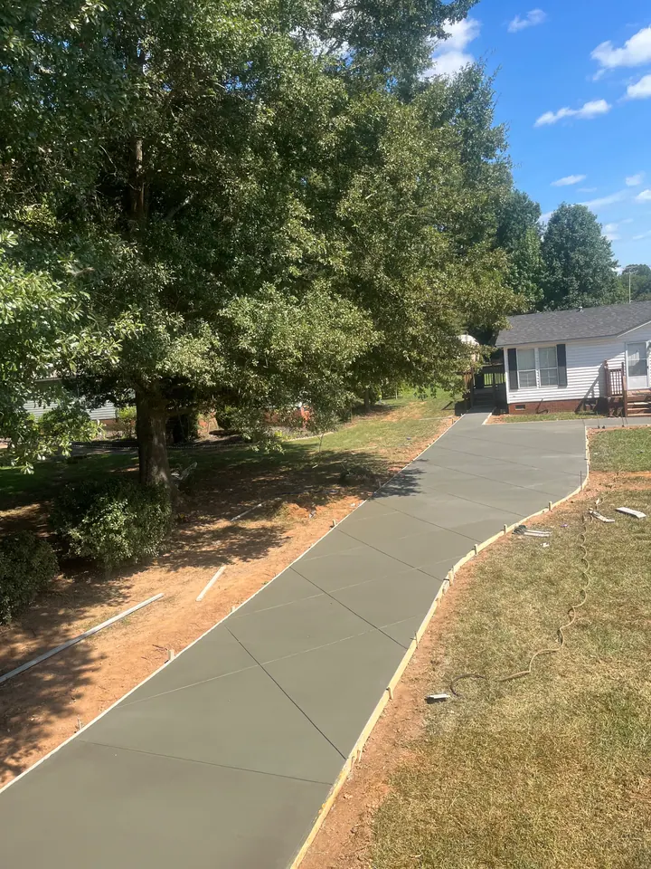

Our portfolio.
Concrete and site work from preparation to finish.

Bringing California style to the Carolinas.
Diagonal patterns, clean lines and curved edges give your outdoor space a distinctive look. Explore our specialty in driveways, patios and walkways.
From preparation to finish.
Explore each stage: preparation, demolition, excavation, grading, concrete placement and finishing.
Find ideas for your space.
Explore finished surfaces first, then see the preparation and process behind the work.
Have a project in mind? Send us photos of your space.
Get a free estimateOur specialty — California Style
Bringing California style to the Carolinas. Diagonal patterns, clean lines and curved edges for driveways, patios and walkways with a distinctive look.
Driveways & Driveway Extensions
Concrete driveways, wider parking areas and extensions for your property.
Porches & Patios
Porches, covered spaces and patios with clean concrete finishes.
Sidewalks, Walkways & Decorative Concrete
Concrete paths that connect entrances, patios and outdoor spaces.
Slabs & Steps
Concrete slabs and steps for residential projects.
Retaining Walls
Curved block walls with visible lighting details. Explore separate views of work in progress.
Preparation
Cleaning, layout, forms, stone and compaction according to site conditions.
Preparation on site
Demolition
Controlled removal of existing concrete and debris before the new work begins.
Excavation
Cuts, roots and soil removal with equipment selected for the site.
Grading
Ground shaping for access, drainage, stability and final preparation.
Placement & finishing
Placement and distribution of fresh concrete inside the prepared work area.
Welding
A workshop photo and a separate outdoor welding video from EBC's Facebook.
Visualize your project before work begins.
With photos, approximate measurements and visual references, we can discuss the shape, size and intended use of your space more clearly before moving soil or placing concrete.
Visual references are conceptual. They do not replace engineering plans, structural calculations, permits or construction documents when those are required.
Tell us what you need built.
Send the address, photos and approximate measurements. EBC will review the site information and help define the next step.